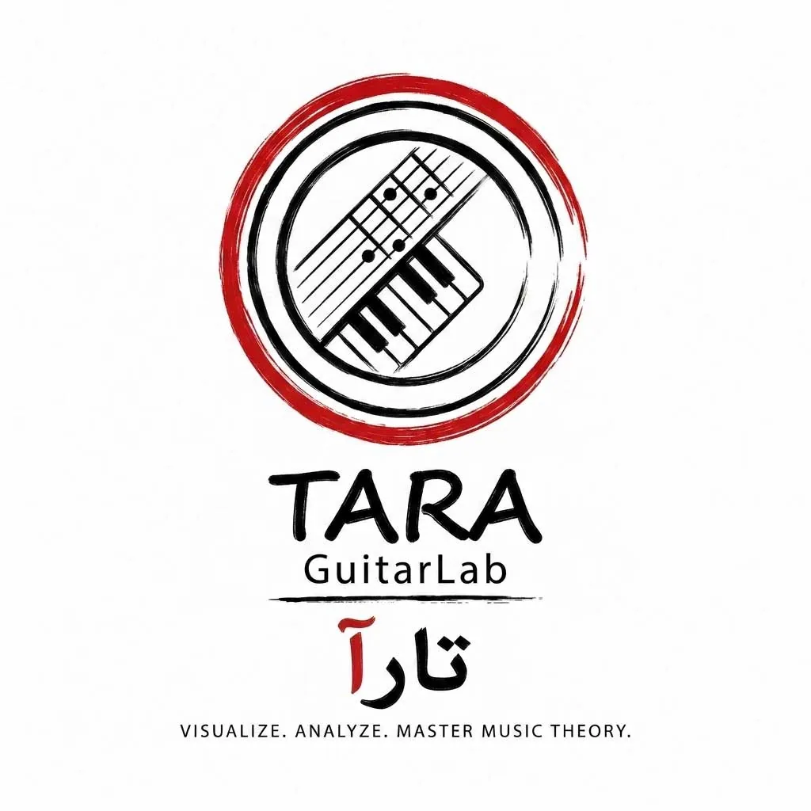

Explore two instruments
Compare guitar fretboard shapes with piano keys to see how notes and scale patterns connect.
Interactive learning tool · Free and open source
Tara GuitarLab is a music lab in your browser. It connects scales, chords, and notes across guitar and piano, then brings them to life with short lessons, practice, and tools for teaching.

What is Tara?
Choose a scale or chord to see its notes on the guitar fretboard, follow the same pitches on the piano, and hear them through the app’s synthesized playback. Tara connects music theory to visual examples and practice you can use on your instrument.
Compare guitar fretboard shapes with piano keys to see how notes and scale patterns connect.
Use guided lessons and exercises for note finding, scale and chord building, ear training, and microphone practice.
Mark notes, assign chord-tone roles, and play a sequence while demonstrating a musical idea.
Use the tuner, metronome, keyboard and MIDI input, notation and tablature, audio playback, and PDF export.
Guitarists who want to see theory on the fretboard, learners who benefit from visual and audio examples, and teachers who need clear tools for demonstrating musical concepts.
Tara runs directly in a web browser without a software installation. Microphone access for the tuner and some exercises requires HTTPS or localhost. Workspace preferences and lesson progress can be saved in the same browser.
Tara is built with HTML, CSS, and JavaScript, and its code is available under the MIT License. Browse the source and follow the project on GitHub.
Tara GuitarLab on GitHubTara GuitarLab is created and developed by Soroush Zendedel.
Get started
Tara’s theory, practice, and teaching tools are free to use.
Enter the lab